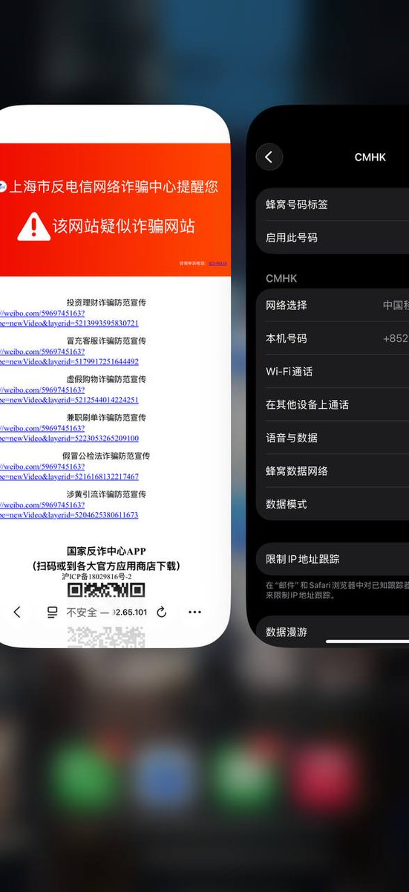
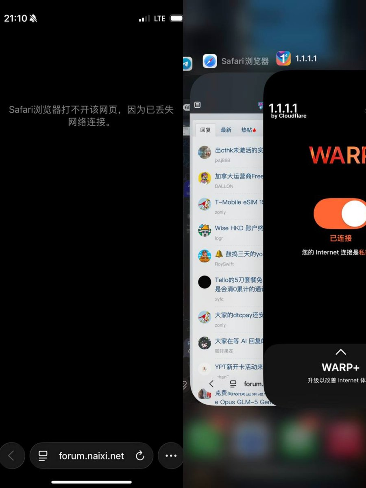
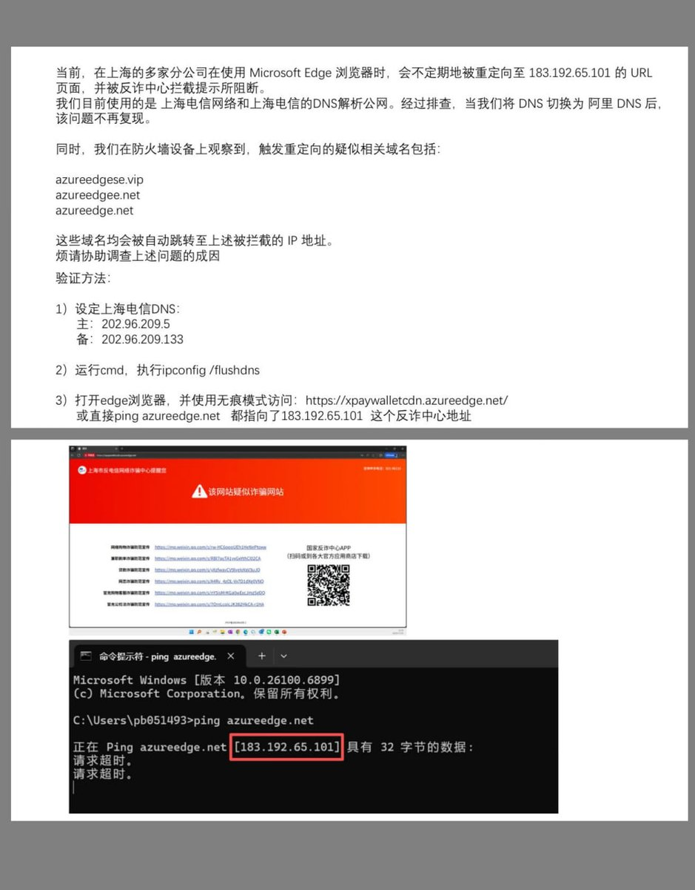
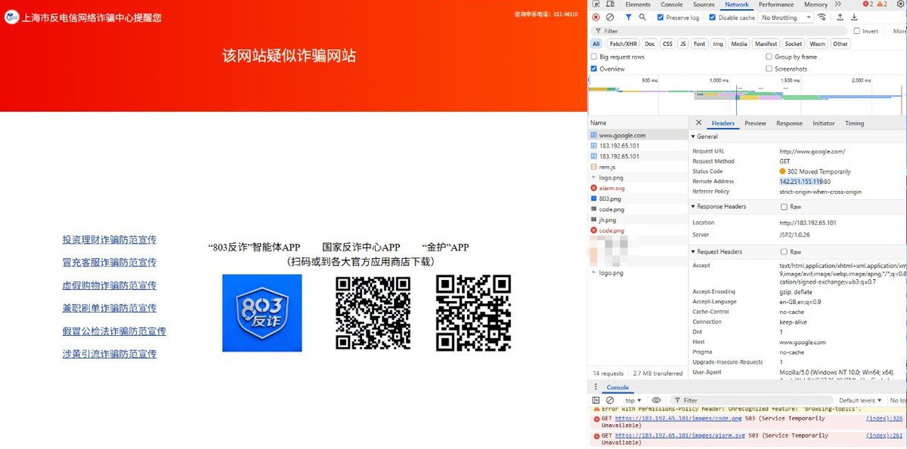

CMHK漫游上海移动，在无痕模式下HTTP访问被反诈网站时有概率跳当地反诈，以HTTPS访问论坛则触发RST，启用Cloudflare WARP后则恢复正常。
疑似中国移动的旁路设备具备抢答UDP53上的DNS请求能力，或许将配置内卡的规则应用到外卡上。其余上海运营商DNS均带有反诈劫持，会不定期跳转，使用第三方公共DNS则不会有该问题。
更奇怪的是，使用CTMO/CMHK/CTM打不开dnsleaktest[.]com检测网站。似乎是运营商侧DNS的解析失败，而非漫游基站所影响，原因未知。

疑似中国移动的旁路设备具备抢答UDP53上的DNS请求能力，或许将配置内卡的规则应用到外卡上。其余上海运营商DNS均带有反诈劫持，会不定期跳转，使用第三方公共DNS则不会有该问题。
更奇怪的是，使用CTMO/CMHK/CTM打不开dnsleaktest[.]com检测网站。似乎是运营商侧DNS的解析失败，而非漫游基站所影响，原因未知。




有网友称，在上海使用境外eSIM并访问Google会被劫持至上海反诈拦截页，原因不明。
我在本月初到沪时，发现酒店使用的上海移动IP打不开奶昔论坛，怀疑是中间人攻击，若加上HTTPS则触发RST阻断。若访问目标没开HSTS或以HTTP访问，页面会被302至上海反诈页面，包括数名上海推友也反馈了该问题。 https://t.co/mUMxbkBluq https://t.co/DcNR0As19C
我在本月初到沪时，发现酒店使用的上海移动IP打不开奶昔论坛，怀疑是中间人攻击，若加上HTTPS则触发RST阻断。若访问目标没开HSTS或以HTTP访问，页面会被302至上海反诈页面，包括数名上海推友也反馈了该问题。 https://t.co/mUMxbkBluq https://t.co/DcNR0As19C